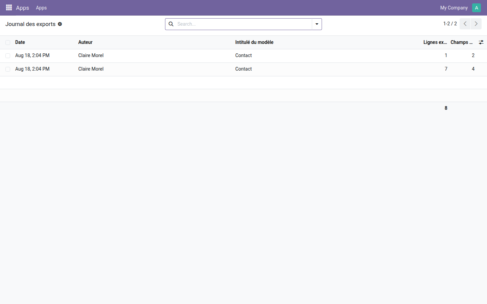

Sachez qui sort quelles données de votre base : modèle, champs, nombre de lignes, date.
Odoo ne propose qu'un interrupteur : le groupe « Autoriser l'export » est donné, ou il ne l'est pas. Une fois donné, plus rien n'est su — ni quel modèle a été vidé, ni combien de lignes sont sorties, ni quand. Le jour où un fichier de clients circule à l'extérieur, il n'existe aucun moyen de savoir d'où il vient.
Deux exports du même modèle : sept lignes sur quatre champs, puis une ligne sur deux champs. La colonne des lignes se totalise, pour mesurer d'un coup d'œil ce qui a quitté la base sur une période.

Un registre dit ce qui est sorti ; il ne restreint pas ce qui est visible. Pour qu'un commercial ne voie que son portefeuille, un chef de projet que ses projets, un caissier que sa caisse, la gamme OdooSkills compte une quinzaine de modules de cloisonnement — par équipe commerciale, par département, par projet, par journal comptable, par entrepôt. Catalogue complet : apps.odooskills.com.
Licence LGPL-3 — compatible Odoo 19.0 Community et Enterprise. Support : support@odooskills.com.